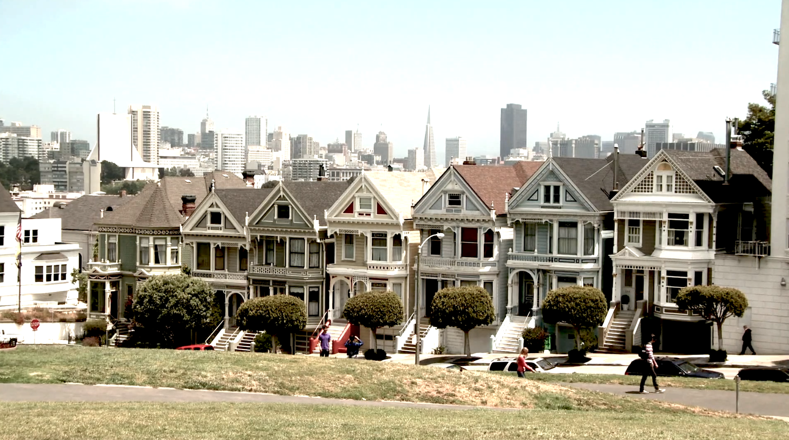

{% extends 'base_template.html' %}
{% load staticfiles %}
{% block content %}

<head>
    <meta http-equiv="content-type" content="text/html; charset=UTF-8">
    <meta charset="utf-8">
    <meta http-equiv="X-UA-Compatible" content="IE=edge,chrome=1">
    <meta name="HandheldFriendly" content="true">
    <meta name="author" content="ray anthony">
    <title>>Responsive HTML5 Video using Javascript</title>
    <meta name="viewport" content="width=device-width, initial-scale=1.0,maximum-scale=1,user-scalable=no">
    <link href="//netdna.bootstrapcdn.com/bootstrap/3.1.1/css/bootstrap.min.css" rel="stylesheet">
    <!--<link href="//vjs.zencdn.net/4.9/video-js.css" rel="stylesheet">-->
    <link rel="stylesheet" type="text/css" href="/css/test.css" />

    <style>.video-js {padding-top: 56.25%}
        .vjs-fullscreen {padding-top: 0px}</style>
</head>
<body>
<div class="wrap">
    <section id="content" class="content">
        <div class="section" id="cloud">
            <div class="title container">
                <h1>Responsive HTML5 Video using Javascript</h1>
            </div>
            <div class="panel">
                <div class="article-post">
                    <video id="videobcg" preload="auto" autoplay="true" loop="loop" muted="muted" volume="0">
                        <source src="../static/movie/background.mp4" type="video/mp4">
                        <!--<source src="movie.webm" type="video/webm">-->
                        Sorry, your browser does not support HTML5 video.
                    </video>
                    <!--<video id="example_video_1" class="video-js vjs-default-skin vjs-big-play-centered video-js-fullscreen"-->
                           <!--controls preload="auto" width="640" height="264"-->
                           <!--poster="http://video-js.zencoder.com/oceans-clip.png"-->
                           <!--data-setup='{ "example_option": true, "width": "auto", "height": "auto", "techOrder": ["html5","flash"] }'>-->
                        <!--<source src="http://video-js.zencoder.com/oceans-clip.mp4" type='video/mp4' />-->
                        <!--<source src="http://video-js.zencoder.com/oceans-clip.webm" type='video/webm' />-->
                        <!--<source src="http://video-js.zencoder.com/oceans-clip.ogv" type='video/ogg' />-->
                        <!--<p class="vjs-no-js">To view this video please enable JavaScript, and use a browser like chrome that <a href="http://videojs.com/html5-video-support/" target="_blank">supports HTML5 video</a></p>-->
                    <!--</video>-->
                </div>
            </div>
        </div>
<div>
    

</div>
<script src="//ajax.googleapis.com/ajax/libs/jquery/1.11.0/jquery.min.js" ></script>
<script src="//netdna.bootstrapcdn.com/bootstrap/3.1.1/js/bootstrap.min.js"></script>
<script src="//vjs.zencdn.net/4.9/video.js"></script>
<script>$('.dropdown-toggle').dropdown();</script>
</body>
{% endblock content %}
